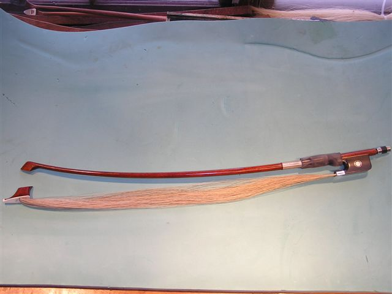
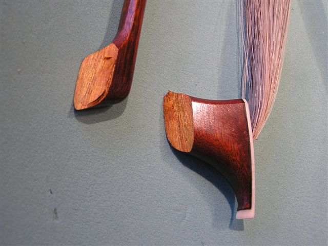
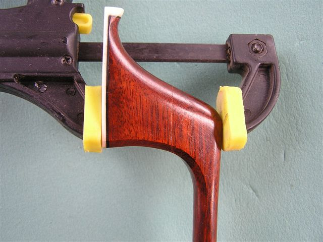
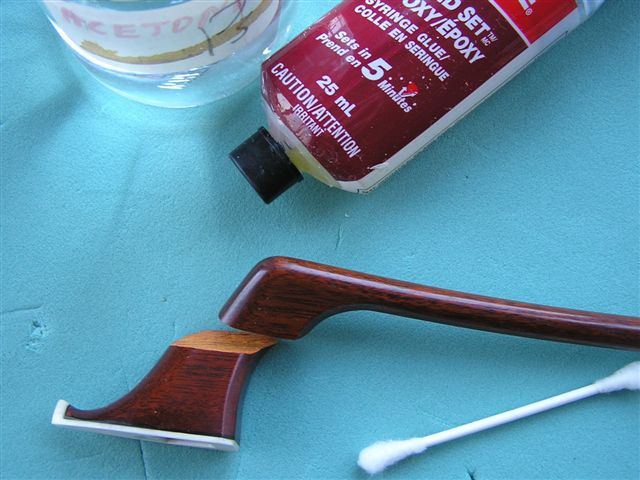
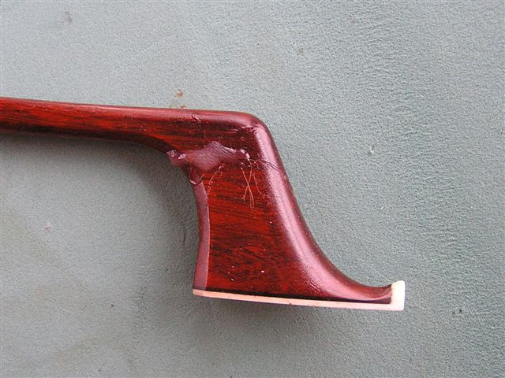
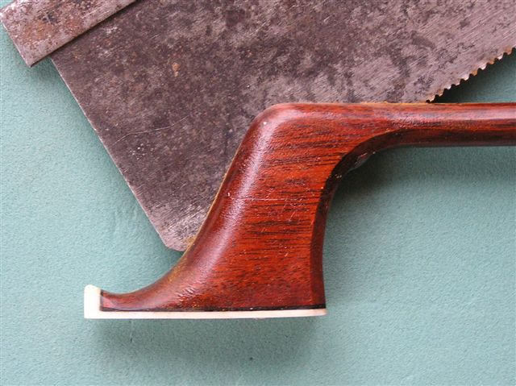
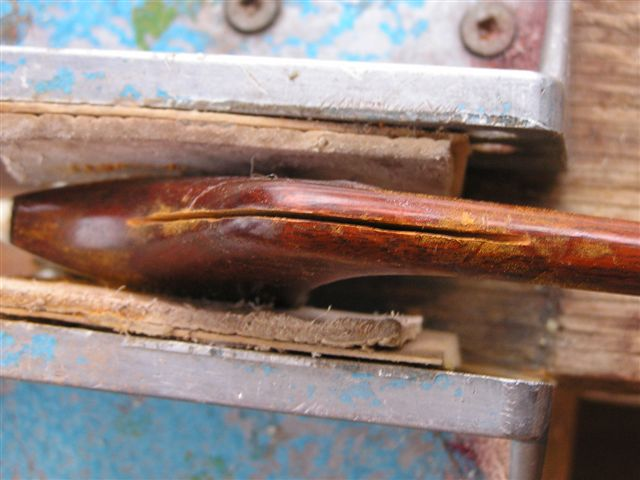
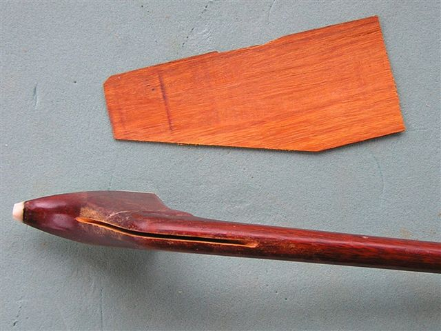
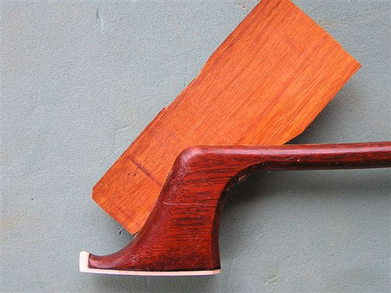
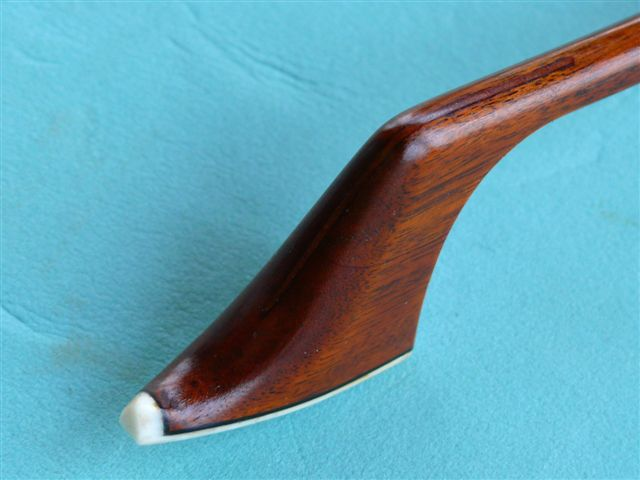

|
How to repair a broken violin, viola, cello or double bass bow. |
|
I have used a bass bow as an example.
 1. Remove the hair and detach the frog. 2. Carefully examine the surface and make sure it fits together.
 3. Clean both sides with acetone and let it dry. 4. Find a way to clamp broken pieces without glue.
 5. Prepare epoxy glue and read the instructions. (I would suggest you test the glue to make sure it sets properly and it should harden very well in 2-3 days)
 6. Apply a small amount of glue on both sides, clamp and wait at least 24 hours.
 7. Carefully cut the middle of the bow as seen on the picture. The space can not be to thin. Use an other kind of saw if necessary to widen this space.

 8. Prepare a piece of thin hardwood that fits inside and has tight grains as shown on this picture.

 9. Clean surfaces with acetone, let it dry and apply epoxy glue. 10. Wait 24 hours before cleaning, filling, applying stain and varnish.
 11. Wait 7 days before putting the hair back and playing .
.This method does NOT guarantee 100% success but it has worked for me most of the time. .
|